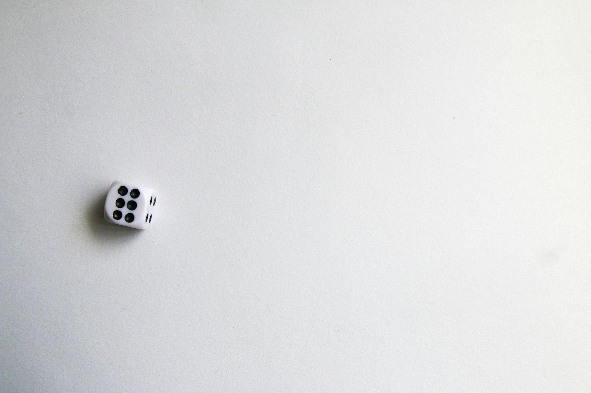
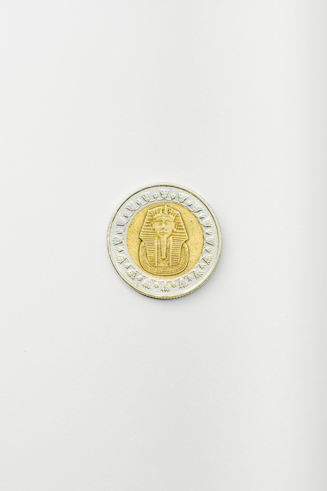
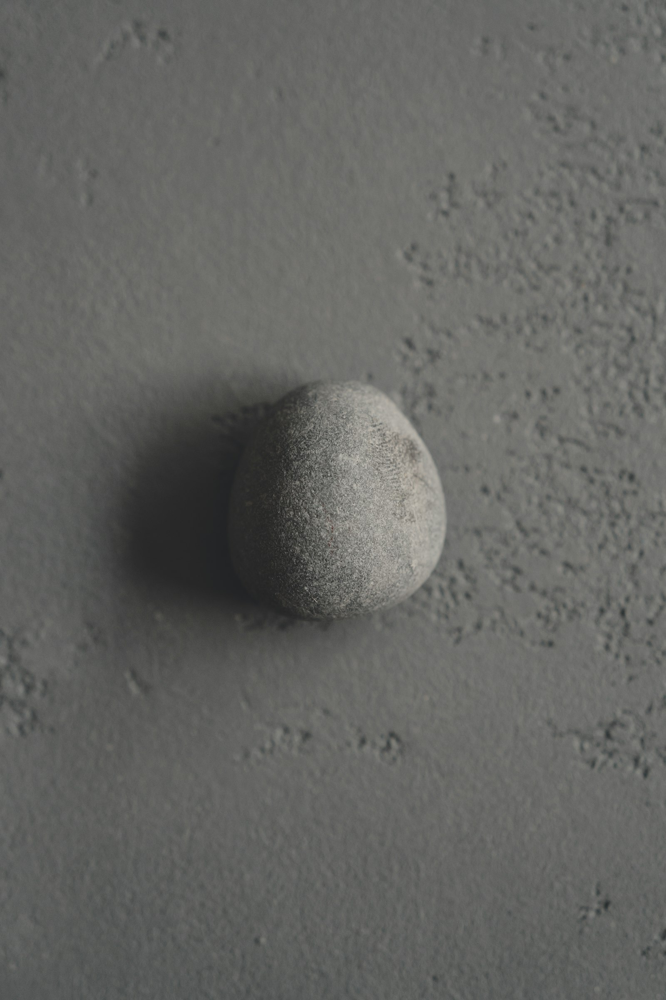

물건
재밌는 확률의 물건들
주사위 · 동전 · 모래시계 · 빈 유리컵 · 조약돌
Chapter 04 — 물건
익숙한 물건 중 왜 이것을 계속 고를까?
다섯 물건은 내가 고르지 않고, 고르는 일을 Claude에게 맡겼다.

One Die
굴리면 여섯 중 하나가 위로 온다
결과를 내가 정하지 않아도 돼서
Heads or Tails
손등 위로 던지면 둘 중 하나만 남는다
망설임을 공중에 맡길 수 있어서

Falling Sand
뒤집으면 같은 모래가 다시 떨어진다
사막의 모래가 시간이 되어 흘러서
Empty Glass
아무것도 따르지 않은 채 빛만 받는다
비어 있어도 무언가 담겨 보여서

Found Stone
어디서 왔는지 모른 채 손안에 놓인다
아무도 고르지 않았는데 거기 있어서